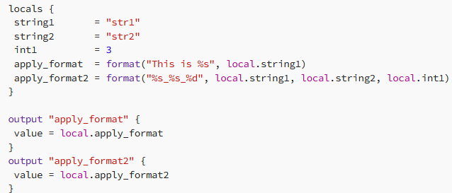

from unknown source:

functions are split into multiple categories:
- String
- Numeric
- Collection
- Date and Time
- Crypto and Hash
- Filesystem
- IP Network
- Encoding
- Type Conversion
ToType Functions
ToType is not an actual function; rather, many functions can help you change the type of a variable to another type.
tonumber(argument) → With this function you can change a string to a number, anything else apart from another number and null will result in an error
tostring(argument) → Changes a number/bool/string/null to a string
tobool(argument) → Changes a string (only “true” or “false”)/bool/null to a bool
tolist(argument) → Changes a set to a list
toset(argument) → Changes a list to a set
tomap(argument) → Converts its argument to a map
format(string_format, unformatted_string)
The format function is similar to the printf function in C and works by formatting a number of values according to a specification string. It can be used to build different strings that may be used in conjunction with other variables. Here is an example of how to use this function:

formatlist(string_format, unformatted_list)
The formatlist function uses the same syntax as the format function but changes the elements in a list. Here is an example of how to use this function:


length(list / string / map)
Returns the length of a string, list, or map.


join(separator, list)
Another useful function in Terraform is “join”. This function creates a string by concatenating together all elements of a list and a separator. For example, consider the following code:

try(value, fallback)
Sometimes, you may want to use a value if it is usable, but fall back to another value if the first one is unusable. This can be achieved using the “try” function. For example:

can(expression)
A useful function for validating variables is “can”. It evaluates an expression and returns a boolean indicating if there is a problem with the expression. For example:

flatten(list)
In Terraform, you may work with complex data types to manage your infrastructure. In these cases, you may want to flatten a list of lists into a single list. This can be achieved using the “flatten” function, as in this example:
 [1, 2, 3, 4, 5, 6]
[1, 2, 3, 4, 5, 6]
keys(map) & values(map)
It may be useful to extract the keys or values from a map as a list. This can be achieved using the “keys” or “values” functions, respectively. For example:


slice(list, startindex, endindex)
Slice returns consecutive elements from a list from a startindex (inclusive) to an endindex (exclusive).
 slice_list = [3]
slice_list = [3]
range
Creates a range of numbers:
- one argument(limit)
- two arguments(initial_value, limit)
- three arguments(initial_value, limit, step)
lookup(map, key, fallback_value)
Retrieves a value from a map using its key. If the value is not found, it will return the default value instead
 This will return: lookup_in_a_map = "key1"
This will return: lookup_in_a_map = "key1"
concat(lists)
Takes two or more lists and combines them in a single one
 This will return: concat_list = [1, 2, 3, 4, 5, 6]
This will return: concat_list = [1, 2, 3, 4, 5, 6]
merge(maps)
The merge function takes one or more maps and returns a single map that contains all of the elements from the input maps. The function can also take objects as input, but the output will always be a map.
Let’s take a look at an example:


zipmap(key_list, value_list)
Constructs a map from a list of keys and a list of values


expanding function argument …
This special argument works only in function calls and expands a list into separate arguments. Useful when you want to merge all maps from a list of maps


file(path_to_file)
Reads the content of a file as a string and can be used in conjunction with other functions like jsondecode / yamldecode.

templatefile(path, vars)
Reads the file from the specified path and changes the variables specified in the file between the interpolation syntax ${ … } with the ones from the vars map.
 This will change the ${change_me} variable to awesome_value.
This will change the ${change_me} variable to awesome_value.
jsondecode(string)
Interprets a string as json.


jsonencode(string)
Encodes a value to a string using json


yamlencode(value)
Encodes a given value to a string using YAML.


element, base64encode, base64decode, formatdate, uuid, and distinct